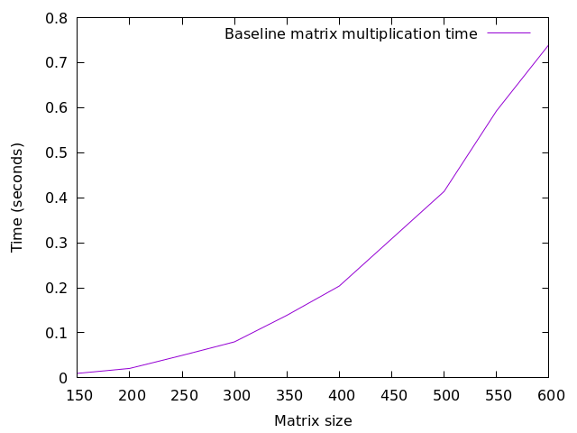
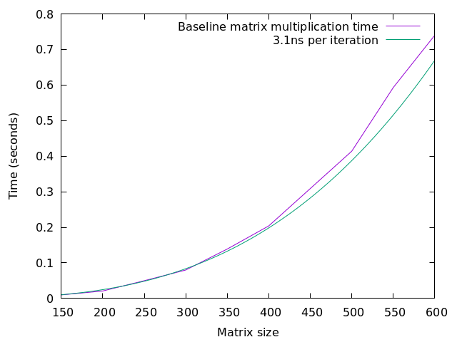
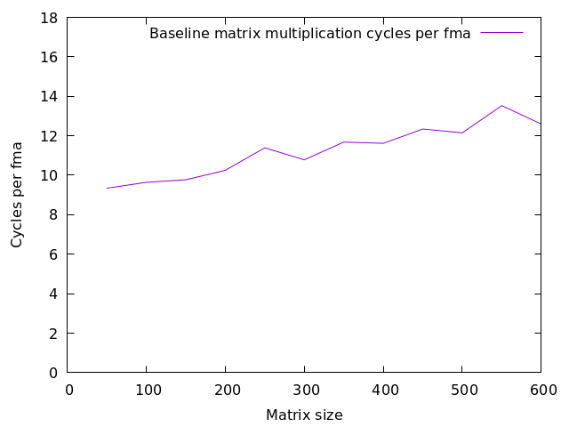
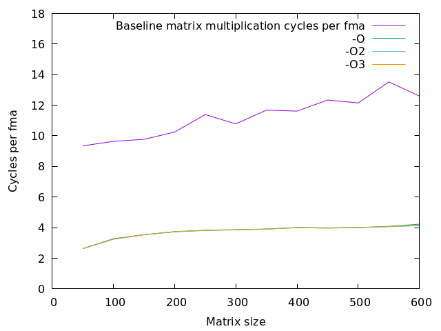
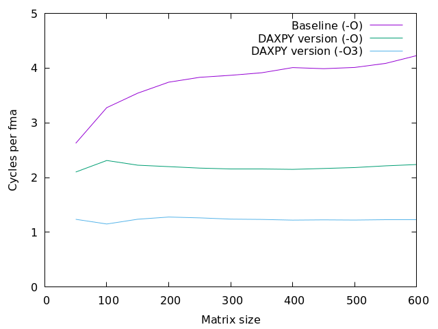
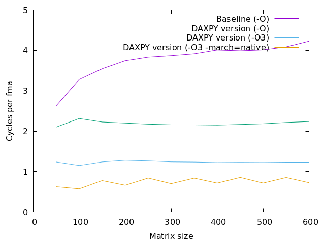
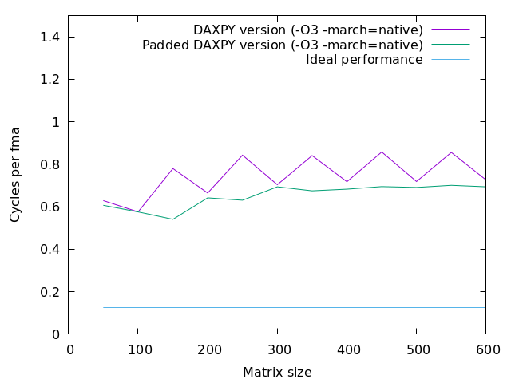
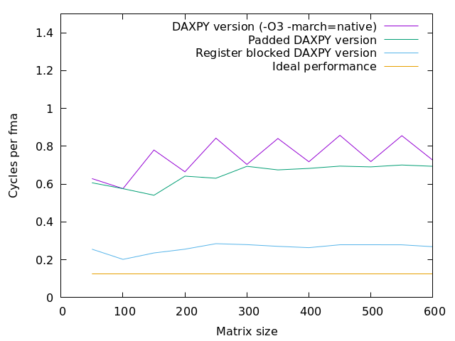
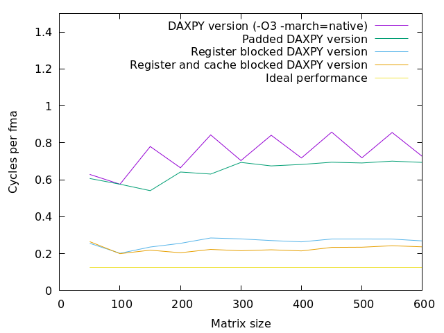
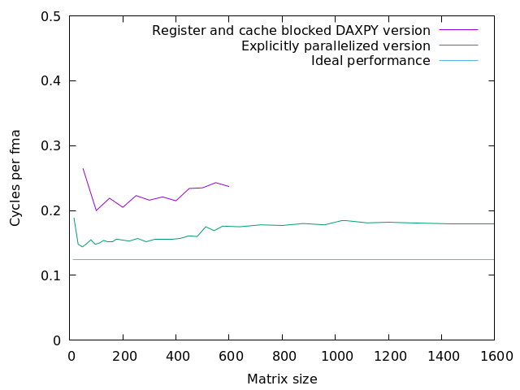

Tuning
We will now combine what we have learnt and apply it to the problem of tuning the well known matrix multiplication algorithm. Matrix multiplication has several advanatges as an example, including:
It is well known and relatively simple (a few lines at our starting point).
It is eminently tunable, as we will see. There is quite a difference in performance between and a heavily tuned version (that is why you probably use a library for this operation).
It is used in many contexts, as are algorithms with a similar structure such as convolutions.
It probably consumes more compute cycles than (almost) any other given that it is what powers large language models such as GPT-4 or GPT-5. Transformers, as the underlying neural network architecture is called, consist almost entirely of matrix multiplications.
The Roofline model
There are several ways to measure performance and, in this course, we have mostly used execution time as a reference. In practice, however, time is not always the best metric for analysis, as it abstracts away many layers of what is happening during the execution of an algorithm.
A popular alternative for evaluating how application kernels perform is the Roofline Model. As the name suggests, it is a performance model that defines two major upper limits (or rooflines) for an application: memory bandwidth and peak computational performance (operations per second). The idea behind the model is that the slowest limiting factor, whether it is data transfer or computation throughput, dictates the overall performance. Therefore, an application can be classified as memory-bound or compute-bound based on where it falls in the model.
More advanced versions of the Roofline Model also take into account additional factors such as cache hierarchies and SIMD extensions (e.g., Fused Multiply-Add, or FMA). This is, for example, what the Intel Advisor Roofline analysis tool provides: in the plot below, each dot represents a loop or function from the application, and multiple ceilings are shown. The farther a kernel is from the corresponding ceiling, the greater the potential for optimization
Diagonal lines represent how many bytes of data a given memory subsystem can deliver per second. Horizontal lines represent the number of floating-point operations the hardware can perform in a given time interval. Source: Intel Corporation.
Among other commonly used tools for performing a roofline model of the hardware, there is the STREAM benchmark and Likwid. However, as this course does not focus on performance modeling in depth, the Roofline Model will not be discussed in depth here.
For further details, please refer to the “Further Reads” section of this lesson.
Matrix-matrix multiplication
Here is a naive matrix multiply with the same structure as the classic definition. The outer two loops iterate over the result array while the innermost loop computes the sum.
1void matmul(double* a, double* b, double* c, long n) {
2 for(long i = 0; i < n; i++) {
3 for(long j = 0; j < n; j++) {
4 double sum = 0;
5 for(long k = 0; k < n; k++) {
6 sum += b[i*n + k] * c[k*n + j];
7 }
8 a[i*n + j] = sum;
9 }
10 }
11}
1module matmul_module
2 use rtvl_module
3 implicit none
4contains
5 subroutine matmul(a, b, c, n)
6 use rtvl_module
7 implicit none
8 integer, intent(in) :: n
9 double precision, intent(inout) :: a(rtvl(n),n)
10 double precision, intent(in) :: b(rtvl(n),n), c(rtvl(n),n)
11 integer :: i, j, k
12 double precision :: sum
13
14 do i = 1, n
15 do j = 1, n
16 sum = 0
17 do k = 1, n
18 sum = sum + b(i,k) * c(k,j)
19 end do
20 a(i,j) = sum
21 end do
22 end do
23 end subroutine matmul
24end module matmul_module
Note
This code uses explicit index calculations. For an N x N matrix M stored
in row major order, the element M[i][j] is stored at offset i*N + j from
the start of the (one dimensinal) array.
This is exactly how the C compiler implements multi dimensional arrays so if you have
double A[100][80];
the reference A[i][j] will effectively be translated to
A[i*80 + j]. This does not work if the compiler does not know the size of
the inner dimension (the row length), which is impossible since we want to
use the matmul() function for matrices of different size.
You can build this code using the following command:
gcc -o mm ex-mm-ref.c ex-mm-main.c -lm
This gives you an executable program called mm.
Exercise
Try running mm with different sized inputs and measure the execution time
using the time command. Sizes around 1000 should run in a few seconds.
Solution
On a T580 with a Core i7-8550U processor, I get the following:
Same data in tabular form:
You can have a different shape to your curve; maybe it starts growing steeper at some point. This likely depends on the memory hierarchy of your machine.
We know from inspecting the code that matrix multiplication is cubic in the size of the matrix (for square matrices). Does that theory hold in practice as well?
Exercise
Try to fit a cubic function (degree three polynomial) to the measurements in the previous exercise.
Solution
On a T580 with a Core i7-8550U processor, the following results are seen:
The fitting was done by hand, prioritizing the smaller matrix sizes since the larger sizes likely have longer per-iteration times due to more cache misses. The difference is not dramatic, though, as you can see.
The question then becomes: Is this a good result? Should we be satisfied and call it a day or should we invest time and effort into trying to make the code faster?
One way to approach this question is to try to find a lower bound for the possible execution time and comparing that lower bound to the observed performance. Such a bound will often come from reasoning about the resources necessarily consumed by the program.
What resources can be used to form this bound depends on what techniques one is ready to use to increase performance. For instance, there are algorithms for matrix multiplication that have a better complexity than \(O(n^3)\), one example being Strassen’s algorithm which is approximately \(O(n^{2.8})\). So if we are willing to switch algorithm, we cannot use the number of arithmetic operations of our current program to compute our lower bound.
For the remainder of this chapter, we will keep the algorithm fixed, so the number
of arithmetic operations can be used to establish a lower bound. But what are those
arithmetic instructions? The obvious answer is that they are additions and
multiplications. However, most modern processors provide fma instructions
which compute \(A = B + C \times D\), mapping very well to the
sum += ... * ... of the inner loop of our program. Thus we will say that we
need to execute \(N^3\) fma operations.
So at what rate can a machine execute fma operations? That depends on
three different factors:
SIMD width: Does the machine have SIMD
fmainstructions that performs multiple operations in a single instruction, and if so, how many?Instruction throughput: How many
fmainstructions can the machine execute per cycle? If anfmatakes more than a cycle, this number is less than one.Clock frequency: Given DVFS, the dynamic change of clock frequency to balance power and performance depending on system load and other factors, there is no simple number to plug in here.
The SIMD width is a feature of the instruction set architecture amd can be found
in the relevant manuals. The throughput of the fma instruction is a feature of
the implementation, that is, the specific processor model. It is typically
documented in either an optimization manual or a hardware manual for that processor
model. As for the clock frequency, there is typically documentation about the
interval in which it falls, but that interval is generally wide, so that information
is of limited value.
We will handle the varying clock frequency by using the Linux perf tool to
measure the number of cycles the program executed rather than the elapsed time.
This is a good choice if the transformations we intend to do on the program
for the purpose of tuning do not affect the clock frequency. This may not always
be true, but in our experience it is close enough for the purpose of gauging the
room for improvement.
Example
For the Core i7-8550U of the T580, the greatest SIMD width implemented is 256
bits (the AVX256 instruction set extension). Since the element type of the
matrix multiplication program is double, we have four elements per vector.
When it comes to the microarchitectures of common x86 implementations, one
of the best references is the web site
maintained by the Danish scientist Agner Fog.
For the present purpose, we consult the
instruction table
document. The Core i7-8550U is based on the Kaby Lake core which shares
microarchitecture with the preceeding Skylake core, so we check the entry for
the VFMADD instruction family in the Skylake tables.
In the reciprocal throughput column we find the value 0.5 which means
that the thoughput is 2 VFMADD family instructions per cycle.
The reciprocal throughput can be interpreted as the resource cost in cycles
of a VFMADD family instruction.
Putting these pieces of information together, we find that this processor
can do up to eight fma operations per cycle.
Next we need to figure out the number of cycles the program spends per (logical)
fma operation. Of course we have a rough idea since we found 3.1ns per
operation to be a good fit above and the clock frequency of our Core i7 will be
somewhere around 2.5 to 3.5 GHz giving an expected interval of 8-11 cycles.
Exercise
Find the number of cycles by running perf as follows:
perf stat ./mm <size>
Solution
On the Core i7-8550U I get the following graph:
Recall that the 3.1ns I fitted with above fell somewhat short of the measured times for large sizes. This effect is immediately visible in this graph: The cycle count rises from 9.5 or so to about 12 for the largest sizes.
The conclusion is then that this version of the program is a factor of a 80-100 from the lower bound, so a tuning effort is warranted.
An observation we can immediately make is that we forgot to turn on optimization when we compiled the matrix multiplication program. Oops!
Exercise
Explore how the performance in time or cycles changes with optimization
level. For GCC, interesting alternatives are -O´´, ``-O2 and -O3.
There are also more specialized flags which are sometimes useful.
Solution
On the Core i7-8550U I get the following graph:
If you think that some of the graphs were not rendered: All of the optimization levels give identical results. If you look closely, the lower graph shimmers a bit here and there.
So, we got quite a boost from turning on optimization, as expected given all of the index calculations in the source code. At this point, the best thing to do is to try to understand the performance we have as far as possible before trying to improve it. What barriers do we have to overcome to get further?
The first step here is to think about our program in the context of what we know of the machine that is executing it and formulating some hypotheses regarding what happens.
Exercise
Take a moment to think about potential performance limiters in the code. You may want to start from the simple performance equation:
\(N_C = N_I \times CPI\)
Also, what hints do we get from the shape of the graphs?
Solution
After collecting our thoughts, we have the following points:
[CPI] Cache misses. Our matrices are large compared to the caches. Even the smallest size matrix I have profiled is 180 000 bytes and we have three of them. So one matrix does not fit in the L1 data cache (32K) and the three of them together is larger than the L2 cache (256K). The 600 by 600 matrices do not fit all at the same time even in the L3 cache (8M). This also fits well with the increase in cycle count as the matrix size increases.
[CPI] Bad spatial locality: the reference to
chas a stride equal to the matrix dimension so nearby references are guaranteed to fall in different cache lines.[CPI] Arithmetic latency: The innermost loop sums the result and the trip count is large enough to exhaust the instruction window, so if the floating point addition has N cycles of latency, we will have at least N cycles per (logical)
fma.[\(N_I\)] The lower bound assumes that the arithmetics is performed using four-way SIMD vectorized
fmainstructions. Unvectorized separatemulandaddinstructions require eight times as many instructions.[CPI and \(N_I\)] The source code has two array accesses per logical
fma, one for thebmatrix and one forc. On an x86, arithmetic instructions can have one memory operand, reducing the increase in instruction count. However, such instructions generate two uops, making them effectively as expensive as two instructions.
Now that we have a few hypotheses, we know what to look for so the next steps are:
Look at the generated code, to see if there is anything surprising. We will only be interested in the innermost loop, and there we expect to see the two memory references, the arithmetic (separate
mulandaddor anfma), uppdates to the pointers (will be separate because of the different strides), and finally loop control in the form of a compare and a conditional branch.Use
perfagain to get the CPI value (reported as IPC since it is expected that there are more instructions than cycles). We can also use the tool to verify that there are really many cache misses and we can get an estimate of how these impact performance.
Here are the example values as for my machine:
Example
Assembly for the innermost loop of the matrix multiplication program, generated by GCC under maximum optimization (
-O3). Comments are mine..L4: ; Assembly label to branch to movsd (%rax), %xmm0 ; Read an element of b into register xmm0 mulsd (%rdx), %xmm0 ; Multiply xmm0 with the element from c addq $8, %rax ; Next element of b (a double is 8 bytes) addq %rcx, %rdx ; Next element of c addsd %xmm0, %xmm1 ; Add product to partial sum in xmm1 cmpq %rax, %rsi ; Have we reached the end of the row of b? jne .L4 ; Loop closing branchThis is good code; we have nothing to complain about. The compiler has not generated any
fmainstruction, probably since we have not told it that it is available.Recall that register operands are indicated with
%and immediates with$. Parentheses around a register indicate a memory reference to the address in the register (register indirect addressing).We now run
perf statwith a small matrix size and enough repetitions to get a reasonable run time.$ perf stat ./mmO 100 150 Ok = 1 Performance counter stats for './mmO 100 150': 326,34 msec task-clock # 0,999 CPUs utilized 1 context-switches # 0,003 K/sec 0 cpu-migrations # 0,000 K/sec 200 page-faults # 0,613 K/sec 1 186 216 578 cycles # 3,635 GHz 2 389 839 498 instructions # 2,01 insn per cycle 342 460 826 branches # 1049,404 M/sec 2 276 417 branch-misses # 0,66% of all branches 0,326737273 seconds time elapsed 0,322730000 seconds user 0,003984000 seconds sys
We can combine the information in these two experiments. The number of iterations of the innermost loop that we execute is \(100 \times 150^3 = 337500k\) which we can multiply by the 7 instructions we have in that loop and compare to the number of instructions executed to verify that we spend 99% of all instructions within that loop.
We can also see that we execute on average two instructions per cycle, which
tallies with about 3.5 cycles per fma we measured previously.
This is surprising. According to Agner Fog’s
tables (and Intel’s
documentation), the addsd instruction has a latency of 4 cycles. The
explanation is that while the instruction window is not large enough to cover
the 150 iterations of the summation loop, it does cover about 28 iterations
so the processor can in fact execute the last iterations of one loop together
with the first iterations of the next. This is also consistent with the
increase in cycles per fma as the matrix size increases; the 28 overlapped
iterations become a smaller and smaller part of the whole trip count of the
summation loop.
The instruction window in the middle of an iteration of the j loop.
Several iterations of the k loop are visible.
The instruction window at the boundary between two iterations of the j
loop. Parallelism between the iterations is possible.
DAXPY
At this point, we can conclude that with this program structure, where the innermost loop computes the sum, we will not get below four cycles per iteration of that loop for large matrix sizes. This leaves two possibilities:
Change the nesting of the loops so that for instance the
jloop becomes the innermost. Then there vill not be data dependencies between the iterations of the innemost loop, enabling more parallelism.Do the sums for several elements of the result matrix
aat the same time. This also increases parallelism, but this time within each iteration of the innermost loop.
We will try alternative 1 first. The inner loop of this version is that of the the venerable DAXPY routine, which is why we will refer to this version as the DAXPY version. This loop ordering was used by the vector computers of old as a building block for matrix multiplication precisely because the loop iterations are independent.
1void matmul(double* a, double* b, double* c, long n) {
2 for(long i = 0; i < n; i++) {
3 for(long j = 0; j < n; j++) a[i*n + j] = 0;
4 for(long k = 0; k < n; k++) {
5 for(long j = 0; j < n; j++) {
6 a[i*n + j] += b[i*n + k] * c[k*n + j];
7 }
8 }
9 }
10}
1module matmul_module
2 use rtvl_module
3 implicit none
4contains
5 subroutine matmul(a, b, c, n)
6 integer, intent(in) :: n
7 double precision, intent(inout) :: a(rtvl(n),n)
8 double precision, intent(in) :: b(rtvl(n),n), c(rtvl(n),n)
9 integer :: i, j, k
10
11 do j = 1, n
12 a(1:n,j) = 0
13 do k = 1, n
14 do i = 1, n
15 a(i,j) = a(i,j) + b(i,k) * c(k,j)
16 end do
17 end do
18 end do
19 end subroutine matmul
20end module matmul_module
As we can see, the reference to b is invariant with respect to the innermost
(j) loop while the references to the two other matrices are stride 1. That is
because j occurs in the index expressions, but only with coefficient 1.
You can build this code as follows:
gcc -O -o mmD ex-mm-daxpy.c ex-mm-main.c -lm
Exercise
Explore the performance of the DAXPY variant!
Solution
On the Core i7-8550U I get the following graph where the baseline is the
previous version under the -O omptimization level:
As we see, the DAXPY version is indeed faster, clocking in at just above two cycles per iteration of the innermost loop.
It is instructive to take a look at the assembly code of this version, just to check what it looks like.
Exercise
Check the assembly code generated from the DAXPY version! You get it by the following command:
gcc -O -o mmD.s -S ex-mm-daxpy.c
The resulting code should be about a hundred lines and you should find the
innermost loop where you have multiplication and addition operations (or
an fma) with an xmm or ymm register as operand (if you are
using an x86 machine; if you’re on an ARM the registers will be d0, d1
and so on).
Solution
The following is the code I get on GCC version 9.4.0 (yes, I run an ancient Ubuntu):
1 .file "ex-mm-daxpy.c" 2 .text 3 .globl matmul 4 .type matmul, @function 5matmul: 6.LFB0: 7 .cfi_startproc 8 endbr64 9 testq %rcx, %rcx 10 jle .L11 11 pushq %r13 12 .cfi_def_cfa_offset 16 13 .cfi_offset 13, -16 14 pushq %r12 15 .cfi_def_cfa_offset 24 16 .cfi_offset 12, -24 17 pushq %rbp 18 .cfi_def_cfa_offset 32 19 .cfi_offset 6, -32 20 pushq %rbx 21 .cfi_def_cfa_offset 40 22 .cfi_offset 3, -40 23 movq %rsi, %r8 24 movq %rdx, %r10 25 movq %rcx, %r12 26 movq %rcx, %r11 27 leaq 0(,%rcx,8), %rbx 28 addq %rbx, %r8 29 movq %rdi, %r9 30 leaq (%rdi,%rbx), %rsi 31 movq %rcx, %r13 32 negq %r13 33 salq $3, %r13 34 movl $0, %ebp 35 jmp .L3 36.L14: 37 addq $8, %rcx 38 addq %r11, %rdi 39 cmpq %r8, %rcx 40 je .L7 41.L5: 42 leaq (%r10,%rdi,8), %rdx 43 movq %r9, %rax 44.L6: 45 movsd (%rcx), %xmm0 46 mulsd (%rdx), %xmm0 47 addsd (%rax), %xmm0 48 movsd %xmm0, (%rax) 49 addq $8, %rax 50 addq $8, %rdx 51 cmpq %rsi, %rax 52 jne .L6 53 jmp .L14 54.L7: 55 addq $1, %rbp 56 addq %rbx, %r8 57 addq %rbx, %r9 58 addq %rbx, %rsi 59 cmpq %rbp, %r12 60 je .L1 61.L3: 62 movq %r9, %rax 63.L4: 64 movq $0x000000000, (%rax) 65 addq $8, %rax 66 cmpq %rsi, %rax 67 jne .L4 68 leaq (%r8,%r13), %rcx 69 movl $0, %edi 70 jmp .L5 71.L1: 72 popq %rbx 73 .cfi_def_cfa_offset 32 74 popq %rbp 75 .cfi_def_cfa_offset 24 76 popq %r12 77 .cfi_def_cfa_offset 16 78 popq %r13 79 .cfi_def_cfa_offset 8 80 ret 81.L11: 82 .cfi_restore 3 83 .cfi_restore 6 84 .cfi_restore 12 85 .cfi_restore 13 86 ret 87 .cfi_endproc 88.LFE0: 89 .size matmul, .-matmul 90 .ident "GCC: (Ubuntu 9.4.0-1ubuntu1~20.04.2) 9.4.0" 91 .section .note.GNU-stack,"",@progbits 92 .section .note.gnu.property,"a" 93 .align 8 94 .long 1f - 0f 95 .long 4f - 1f 96 .long 5 970: 98 .string "GNU" 991: 100 .align 8 101 .long 0xc0000002 102 .long 3f - 2f 1032: 104 .long 0x3 1053: 106 .align 8 1074:
The innermost loop is on line 44-52. Here is what it looks like if we annotate it:
.L6:
movsd (%rcx), %xmm0 ; Read element of b
mulsd (%rdx), %xmm0 ; Multiply with element of c
addsd (%rax), %xmm0 ; Add to old value in a
movsd %xmm0, (%rax) ; Write back to a
addq $8, %rax ; Update pointer to a
addq $8, %rdx ; Update pointer to c
cmpq %rsi, %rax ; At endo of row in a?
jne .L6 ; Branch back if not
There is one thing that stands out here: The reference to b, which is
invariant with respect to the innermost (j) loop, is not register allocated.
The reason is that the compiler cannot prove that the array b does not
overlap with a (or more precisely, that the update to a[i*n + j] never
touches the same memory as b[i*n + k]. However, doing the register
allocation makes no difference since the load always hits in the cache and
the processor has sufficient memory bandwidth.
A somewhat surprising observation is that the code is not appreciably slowed
down by cache misses. The processor has hardware prefetchers that try to
ensure that data is available in the caches when needed. Since both a and
c are accessed with stride 1, it is easy for the prefetchers to follow
the pattern. The same row of a is reused on every iteration of the (middle)
k loop so it will fit in the L1 data cache up to a row length of 4096
when it will fill the cache completely. The c matrix will only fit in
L1 for sizes up to 64 by 64, so it will be read from the L2 cache (size up to
160 by 160 or so) or the L3 (up to 1024 by 1024) or memory. Given that we
read eight bytes (a double) every two cycles, we’re well within the
bandwidth from the L2 or L3 caches so the prefetcher can keep well ahead.
The performance limitation for this version is the number of instructions or
uops (work) rather than latency (span) as for the baseline implementation.
There is also no major cache effects as long as at least the c matrix fits
in the L3 cache.
Hence, we need to get more work done per instruction. There are several ways in which this area can be improved.
Only scalar arithmetic gets generated; no vector operations.
No
fmainstructions are used, doubling the number of arithmetic instructions.Only a quarter (two out of eight) of the instructions are arithmetic while the processor supports up to half.
Vectorization
We will start by addressing the first point. There are in general several ways to get vectorized code:
The easiest is if the compiler can take scalar code and convert it to vectorized code with no change in the source. This is called autovectorization and it has been with us for fifty years and at least somewhat useful since forty years or so. Nowadays, compilers like GCC, Clang and Intel’s icc often do a reasonable job.
Special intrinsic functions, typically built into the compiler, can be used. There is typically one intrinsic for each SIMD instruction. These intrinsics are therefore machine dependent.
GCC and Clang provide a way to define vector types like “vector of four doubles” that automatically inherits many operators. Hence, if
xandyare vectors of the same size and element type,x + yis their element-wise sum.
Exercise
Let’s try autovectorization! On the version of GCC that I have, auto
vectorization is included in -O3 optimization, so we recompile our
code thus:
gcc -O3 -o mmD ex-mm-daxpy.c ex-mm-main.c -lm
Do we get any performance difference?
Solution
On the Core i7-8550U we get the following:
We can see that we get almost another factor of two.
Example
The effect of -O3 on the Core i7-8550U. The assembly code of the
innermost loop now looks as follows:
.L7:
movupd (%rax,%r9), %xmm0 ; Read elements of c
movupd (%rcx,%r9), %xmm2 ; Read elements of a
mulpd %xmm1, %xmm0 ; Multiply elements from b and c
addpd %xmm2, %xmm0 ; Add to elements of a
movups %xmm0, (%rcx,%r9) ; Write sum to a
addq $16, %r9 ; Update offsets
cmpq %r9, %rbp ; Done?
jne .L7 ; Branch back if not
This code uses addresses of the form (%rax,%r9) which refer to the memory
location whose address is the sum of the contents of the two registers. So
rax holds the address of the current row in
c while rcx points at the start of the current row in
a.
The use of xmm registers as well as the add of 16 to the offset in
r9 indicate that the compiler has chosen a SIMD vector length of 128 bits,
or two double values. Hence each iteration of the innermost loop now
computes two fma operations so the slightly above 1.2 cycles per
fma results indicate an inner loop time of just under 2.5 cycles on average.
Given the number of variants of the x86 architecture, what code should be generated by a compiler like GCC? If GCC generates code very conservatively, using only instructions that are included in all processors that have been produced for many years, the code will run on just about any x86 machine out there. However, it will not take advantage of more recent improvements like SIMD vector extensions.
The most common compromise struck by GCC on 64-bit systems (almost all today) is to go for the first 64-bit version of the x86 architecture, often referred to as x86_64. This includes 128-bit SIMD vector support, but not the 256 bit AVX. This default is decided when GCC is compiled, so it is up to the distribution, for instance Ubuntu, to make the choice.
It is always possible to tell GCC to generate code for a particlar instruction set
using the -march option. If you want code that uses all of the features of
the machine on which you run the compiler, you can use -march=native.
Example
Let us see what code we get if we tell GCC to generate code specifically for the Core i7-8550U. We do this by compiling the matrix multiplication program as follows:
gcc -O3 -march=native -S -o mmD.s ex-mm-daxpy.c
This gives us the following code for the innermost loop:
.L7:
vmovupd (%rax,%rdi), %ymm0 ; Read elements from c
vfmadd213pd (%rcx,%rdi), %ymm1, %ymm0 ; fma with element from a
vmovupd %ymm0, (%rcx,%rdi) ; Write back to a
addq $32, %rdi ; Increment offset
cmpq %rdi, %rbx ; Done?
jne .L7 ; Branch back if not
This is excellent code:
Finally, we actually get the fma instruction. The
pdat the end says that it is packed (that is, a vector operation) and that the element type is double. The213controls the interpretation of the operands; in this case we have approximately:ymm0 = memory[rcx+rdi] + ymm0*ymm1
Both the use of the 256 bit
ymmregisters and the value 32 being added to the offset inrditells us that we now get 256-bit code.
Exercise
Explore the performance effect of compiling for your native machine! Compile with
gcc -O3 -march=native -o mmD ex-mm-daxpy.c ex-mm-main.c -lm
Do we get any performance difference?
Solution
On the Core i7-8550U, we get the following:
There are some interesting things to see in this graph:
There is a wavy pattern to the native version with every other point having better performance.
The performance has not really doubled, although there is a substantial improvement.
One phenomenon that we now encounter for the first time is the cost of unaligned
data accesses. When the matrix size is divisible by two but not by four (as in
for instance 150), the length of a row is not an integral number of 32 byte
SIMD vectors. Rather, each row is of length “something-and-a-half” vectors. Thus
every other row will not be vector aligned. This will lead to vector accesses
that straddle a cache line boundary, necessitating two tag look-ups with the
attendant increase in access time. Note that this happens not only at the start
of such rows, but for every other iteration of the j loop.
One way to handle this problem is to use a padded representation of matrices. Thus, during the mapping of the two index dimensions to the single linear offset, we round the row length to the nearest multiple of four (in this case).
This in implemented in this padded version of the code where rtvl() (round to
vector length) is a function that rounds its argument to the next multiple of 4:
1#include "rtvl.h"
2
3void matmul(double* a, double* b, double* c, long n) {
4 long rn = rtvl(n);
5 for(long i = 0; i < n; i++) {
6 for(long j = 0; j < n; j++) a[i*rn + j] = 0;
7 for(long k = 0; k < n; k++) {
8 for(long j = 0; j < n; j++) {
9 a[i*rn + j] += b[i*rn + k] * c[k*rn + j];
10 }
11 }
12 }
13}
Note that we only use the rounded size for the index computations, not for the loop bounds. For this code to work correctly, the caller must also use the same padding.
Exercise
Explore the performance effect of padding! Compile with
gcc -O3 -march=native -DRTVL -o mmDp ex-mm-daxpy-p.c ex-mm-main.c -lm
The -DRTVL enables the rtvl() function which otherwise just returns its
argument. This allows us to use the same ex-mm-main.c with both padded and
unpadded matrix multiplication functions.
Do we get any performance difference?
Solution
On the Core i7-8550U, we get the following:
Here we have eliminated some of the less aggressively tuned variants, and, since we are starting to get somewhere, added the ideal performance curve as a tantalizing glimpse.
The graph for the new version clearly shows that padding solved the problem.
All of the vector reads are now aligned. We are also starting to see a pattern
that will follow us from now on: we get the highest efficiency for intermediate
matrix sizes. This is since there is certain overhead (clearing a, loop
management) that scales as \(n^2\) or better while the work in the innermost
loop scales as \(n^3\).
On the other hand, all reuse distances increase when the matrix size grows so we get worse locality and more cache misses. The effect is noticable but not dramatic; the L3 bandwidth is sufficient to feed the execution unit while the hardware prefetch mitigates the latency problems.
Using perf stat we can see that we have a bit over three instructions per
cycle for size 100 (fits in L2) and around 2.5 for size 200 (fits in L3).
We are now a factor of four to five above the ideal performance and we execute at about three instructions per cycle out of the theoretical maximum of four, so in order to get a substantial improvement, we must execute fewer instructions.
The innermost loop (in the example above) contains one vector fma instruction,
two data movements instructions and three housekeeping instructions (pointer update,
loop control). We need to get more arithmetic compared to the rest of the
operations.
There are two potential ways to accomplish this:
Loop unrolling would decrease the house keeping fraction.
Register blocking would increase the compute fraction.
Out of these two, we will do the register blocking since we can not perform loop unrolling as a source level transformation as it would interfere with the autovectorization done by the compiler.
Blocking for registers
Register blocking looks at the memory references in the innermost loop and attempt to amortize these over more computation. We get the additional computation by executing multiple iterations of the enclosing loops at once. Here is the new version of the code:
1#include "rtvl.h"
2#include <string.h>
3
4void matmul(double* a, double* b, double* c, long n) {
5 long rn = rtvl(n);
6 long m = n%4;
7 for(long i = 0; i < n; i+=2) {
8 memset(a + i*rn, 0, 2*rn*sizeof(double));
9 for(long k = 0; k < n-3; k+=4) {
10 double b00 = b[(i+0)*rn + k + 0];
11 double b01 = b[(i+0)*rn + k + 1];
12 double b02 = b[(i+0)*rn + k + 2];
13 double b03 = b[(i+0)*rn + k + 3];
14 double b10 = b[(i+1)*rn + k + 0];
15 double b11 = b[(i+1)*rn + k + 1];
16 double b12 = b[(i+1)*rn + k + 2];
17 double b13 = b[(i+1)*rn + k + 3];
18 #pragma omp simd
19 for(long j = 0; j < n; j++) {
20 double s0 = a[i*rn + j];
21 double s1 = a[(i+1)*rn + j];
22 s0 += b00 * c[k*rn + j];
23 s1 += b10 * c[k*rn + j];
24 s0 += b01 * c[(k+1)*rn + j];
25 s1 += b11 * c[(k+1)*rn + j];
26 s0 += b02 * c[(k+2)*rn + j];
27 s1 += b12 * c[(k+2)*rn + j];
28 s0 += b03 * c[(k+3)*rn + j];
29 s1 += b13 * c[(k+3)*rn + j];
30 a[ i*rn + j] = s0;
31 a[(i+1)*rn + j] = s1;
32 }
33 }
34 for( long k = n-m; k < n; k++ ) {
35 #pragma omp simd
36 for( long j = 0; j < n; j++ ) {
37 a[ i*n + j] += b[ i*n + k] * c[k*n + j];
38 a[(i+1)*n + j] += b[(i+1)*n + k] * c[k*n + j];
39 }
40 }
41 }
42}
1module matmul_module
2 use rtvl_module
3 implicit none
4contains
5 subroutine matmul(a, b, c, n)
6 integer, intent(in) :: n
7 double precision, intent(inout) :: a(n,n)
8 double precision, intent(in) :: b(n,n), c(n,n)
9 integer :: i, j, k, rn, m
10 double precision :: c00, c10, c20, c30, c01, c11, c21, c31
11 double precision :: s0, s1
12
13 rn = rtvl(n)
14 m = mod(n, 4)
15
16 do j = 1, n, 2
17 a(1:n,j:j+1) = 0
18 do k = 1, n-m, 4
19 c00 = c(k, j)
20 c10 = c(k+1,j)
21 c20 = c(k+2,j)
22 c30 = c(k+3,j)
23 c01 = c(k, j+1)
24 c11 = c(k+1,j+1)
25 c21 = c(k+2,j+1)
26 c31 = c(k+3,j+1)
27 do i = 1, n
28 s0 = a(i,j)
29 s1 = a(i,j+1)
30 s0 = s0 + b(i,k+0) * c00
31 s1 = s1 + b(i,k+0) * c01
32 s0 = s0 + b(i,k+1) * c10
33 s1 = s1 + b(i,k+1) * c11
34 s0 = s0 + b(i,k+2) * c20
35 s1 = s1 + b(i,k+2) * c21
36 s0 = s0 + b(i,k+3) * c30
37 s1 = s1 + b(i,k+3) * c31
38 a(i,j) = s0
39 a(i,j+1) = s1
40 end do
41 end do
42 do k = n-m+1, n
43 do i = 1, n
44 a(i,j) = a(i,j) + b(i,k) * c(k,j)
45 a(i,j+1)= a(i,j+1) + b(i,k) * c(k,j+1)
46 end do
47 end do
48 end do
49 end subroutine matmul
50end module matmul_module
There is quite a lot to unpack here:
Looking at the innermost loop, lines 19-32, we see eight
+=operators, working on scalar variables rather than directly at theamatrix. There are two partial sum variables,s0ands1, each used four times.In the innermost loop, we see that
k,k+1,k+2, andk+3are used and thekloop (line 9) uses an increment of 4.The reads and writes to the
amatrix use bothiandi+1in the index expressions, and theiloop (line 7) has an increment of 2.Putting the last two observations together, we have blocked with respect to the
iandkloops with blocking factors of 2 and 4, respectively, which also tallies with the eight (\(2 \times 4\))+=operators in the innermost loop.Tke
kloop (line 9) only iterates ifk < n-3in order not to overshoot ifnis not a multiple of four. The remaining 0-3 iterations are performed in lines 34-40.There is no corresponding provision for odd values of
nin theiloop (line 7), so this version of the code only works for even matrix sizes (including those not a multiple of four).There are two OpenMP pragmas (lines 18 and 35). These instruct the compiler to SIMD-vectorize the code. Unfortunately, the blocked inner loop is too big for
gccto do the SIMD vectorization without this explicit request.
The strategy behind the block selection (2 in the i direction and 4 in
the k direction) is that each direction saves work in the memory accesses
that do not depend on that loop variable. There are two accesses to the a
matrix (a read and a write) so we bring the number of accesses from two per fma
to one half per fma.
As for the c[k*rn + j] access from the non blocked version, it is independent of
i so the same matric element will be reused for different values of that variable.
In the original, there is one read per fma operation, so the blocking factor of
2 for i gives us one half read for each
fma. Exchanging the blocking factors would give us one reference to
a and a quarter of a reference to
c for every compute instruction which is clearly worse.
We can verify this analysis by referring to the innermost loop in lines 19-32 and counting
... += ... * ...
statements and unique memory references (the compiler deals with multiple copies of the same expression).
Two reads of
a:a[i*rn + j],a[(i+1)*rn + j]Four reads of
c:c[k*rn + j],c[(k+1)*rn + j],c[(k+2)*rn + j],c[(k+3)*rn + j]Two writes to
a:a[i*rn + j],a[(i+1)*rn + j]
Thus we are now at one memory access per fma operation rather than three as
in the original code.
What stops us from improving the ratio between compute and memory reference even
further by choosing even larger blocking factors? The most concrete limiting factor
is the additional number of registers that would be needed for the bik
variables. These depend on both i and k but are independent of
j which is why they are loop invariant. There are 16 vector registers in the
architecture and we need a few for common subexpressions or similar. So 4 by 4
or larger would lead to some of the bik being spilled to memory by the compiler.
Example
Let us look at what the generated code looks like for the inner loop:
gcc -O3 -march=native -S -o mmDb.s -fopenmp -DRTVL ex-mm-block.c
Here is the inner loop:
1.L5:
2 vmovupd (%rcx,%rax), %ymm1 ; Read from c
3 vmovapd %ymm10, %ymm0 ; ymm0 will be overwritten
4 vfmadd213pd (%r15,%rax), %ymm1, %ymm0 ; fma, a[...] is first operand
5 vfmadd213pd (%r14,%rax), %ymm9, %ymm1 ; fma, a[...] is first operand
6 vmovupd (%r10,%rax), %ymm2 ; Read from c
7 vfmadd231pd %ymm2, %ymm8, %ymm0 ; fma
8 vfmadd231pd %ymm2, %ymm7, %ymm1 ; fma
9 vmovupd (%rdx,%rax), %ymm2 ; Read from c
10 vfmadd231pd %ymm2, %ymm6, %ymm0 ; fma
11 vfmadd132pd %ymm5, %ymm1, %ymm2 ; fma (partial sum written to ymm2)
12 vmovupd (%rsi,%rax), %ymm1 ; Read from c
13 vfmadd231pd %ymm1, %ymm4, %ymm0 ; fma
14 vfmadd132pd %ymm3, %ymm2, %ymm1 ; fma
15 vmovupd %ymm0, (%r15,%rax) ; Write to a
16 vmovupd %ymm1, (%r14,%rax) ; Write to a
17 addq $32, %rax ; Increment offset
18 cmpq %rax, %rbx ; Are we done?
19 jne .L5 ; Loop back
This is about as good code as you can expect. There are eight fma instructions
and eight memory references, two of which are combined with the compute operatons.
There are three different variants of the fma instruction used. They differ
in which instruction operand plays what role in the computation. The reason for
the different variants is that there are two operands that are special:
The first operand can be read from memory.
The third operand will be both read and written (since the instruction format does not accomodate four operands).
Note also that the memory references use different base registers together with
a common offset in rax.
In total, there are 18 instructions in the loop body. With an ideal execution
rate of four instructions per cycle, this amounts to 4.5 cycles for 8 vector
fma operations or a 0.14 cycles per scalar fma.
Exercise
Explore the performance effect of register blocking! Compile with
gcc -O3 -march=native -fopenmp -DRTVL -o mmDb ex-mm-block.c ex-mm-main.c -lm
Do we get any performance difference?
Solution
On the Core i7-8550U, we get the following:
We see a huge improvement in performance, in fact almost a factor of three
for size 100 where we reach about 0.2 cycles per fma. For larger matrix
sizes we see a small slowdown until about 250 with similar perfromance out
to 600. For that size range, the working set of the algorithm fits in the L3
cache.
We see that we are still quite a bit from the ideal performance of 0.125 cycles
per scalar fma or the ideal inner loop performance of 0.14 cycles per
scalar fma.
Blocking for the cache
For the larger matrix sizes, we lose some time to cache misses, so it seems
worthwhile to try blocking for the cache as well. The goal of this blocking is
the c matrix which is indexed by
k and j and hence independent of
i. So if we could limit the amount of data from this matrix touched within
each iteration of the i loop, then that data would fit in the L1 or L2 caches.
Here is the code:
1#include "rtvl.h"
2#include <string.h>
3
4void matmul(double* a, double* b, double* c, long n) {
5 const long rn = rtvl(n);
6 const long m = n%4;
7 const long jb = n > 512 ? 512 : n;
8 const long kb = n < 256 ? 4 * (1024 / jb) : 16;
9 for(long jj = 0; jj < n; jj += jb) {
10 long jlim = jj+jb <= n ? jj+jb : n;
11 for(long kk = 0; kk < n; kk += kb) {
12 long klim = kk+kb <= n ? kk+kb : n;
13 for(long i = 0; i < n; i+=2) {
14 if(kk == 0) {
15 memset(a + (i+0)*rn + jj, 0, (jlim-jj)*sizeof(double));
16 memset(a + (i+1)*rn + jj, 0, (jlim-jj)*sizeof(double));
17 }
18 for(long k = kk; k < klim-3; k+=4) {
19 double b00 = b[(i+0)*rn + k + 0];
20 double b01 = b[(i+0)*rn + k + 1];
21 double b02 = b[(i+0)*rn + k + 2];
22 double b03 = b[(i+0)*rn + k + 3];
23 double b10 = b[(i+1)*rn + k + 0];
24 double b11 = b[(i+1)*rn + k + 1];
25 double b12 = b[(i+1)*rn + k + 2];
26 double b13 = b[(i+1)*rn + k + 3];
27 #pragma omp simd
28 for(long j = jj; j < jlim; j++) {
29 double s0 = a[i*rn + j];
30 double s1 = a[(i+1)*rn + j];
31 s0 += b00 * c[k*rn + j];
32 s1 += b10 * c[k*rn + j];
33 s0 += b01 * c[(k+1)*rn + j];
34 s1 += b11 * c[(k+1)*rn + j];
35 s0 += b02 * c[(k+2)*rn + j];
36 s1 += b12 * c[(k+2)*rn + j];
37 s0 += b03 * c[(k+3)*rn + j];
38 s1 += b13 * c[(k+3)*rn + j];
39 a[ i*rn + j] = s0;
40 a[(i+1)*rn + j] = s1;
41 }
42 }
43 if(klim == n) {
44 for( long k = n-m; k < n; k++ ) {
45 #pragma omp simd
46 for( long j = jj; j < jlim; j++ ) {
47 a[ i*rn + j] += b[ i*rn + k] * c[k*rn + j];
48 a[(i+1)*rn + j] += b[(i+1)*rn + k] * c[k*rn + j];
49 }
50 }
51 }
52 }
53 }
54 }
55}
1module matmul_module
2 use rtvl_module
3 implicit none
4contains
5 subroutine matmul(a, b, c, n)
6 integer, intent(in) :: n
7 double precision, intent(inout) :: a(rtvl(n),n)
8 double precision, intent(in) :: b(rtvl(n),n), c(rtvl(n),n)
9 integer :: i, j, k, rn, m, ib, kb, ii, kk, ilim, klim
10 double precision :: c00, c10, c20, c30, c01, c11, c21, c31
11 double precision :: s0, s1
12
13 rn = rtvl(n)
14 m = mod(n, 4)
15
16 ib = merge(512, n, n > 512)
17 kb = merge(4 * (1024 / ib), 16, n < 256)
18
19 do ii = 1, n, ib
20 ilim = min(ii+ib-1, n)
21 do kk = 1, n, kb
22 klim = min(kk+kb-1, n)
23 do j = 1, n, 2
24 if (kk == 1) then
25 a(ii:ilim,j:j+1) = 0
26 end if
27 do k = kk, klim-3, 4
28 c00 = c(k, j)
29 c10 = c(k+1,j)
30 c20 = c(k+2,j)
31 c30 = c(k+3,j)
32 c01 = c(k, j+1)
33 c11 = c(k+1,j+1)
34 c21 = c(k+2,j+1)
35 c31 = c(k+3,j+1)
36 do i = ii, ilim
37 s0 = a(i,j)
38 s1 = a(i,j+1)
39 s0 = s0 + b(i,k+0) * c00
40 s1 = s1 + b(i,k+0) * c01
41 s0 = s0 + b(i,k+1) * c10
42 s1 = s1 + b(i,k+1) * c11
43 s0 = s0 + b(i,k+2) * c20
44 s1 = s1 + b(i,k+2) * c21
45 s0 = s0 + b(i,k+3) * c30
46 s1 = s1 + b(i,k+3) * c31
47 a(i,j) = s0
48 a(i,j+1) = s1
49 end do
50 end do
51 if (klim == n) then
52 do k = n-m+1, n
53 do i = ii, ilim
54 a(i,j) = a(i,j) + b(i,k) * c(k,j)
55 a(i,j+1)= a(i,j+1) + b(i,k) * c(k,j+1)
56 end do
57 end do
58 end if
59 end do
60 end do
61 end do
62 end subroutine matmul
63end module matmul_module
Exercise
Explore the performance effect of cache and register blocking! Compile with
gcc -O3 -march=native -fopenmp -DRTVL -o mmDbb ex-mm-bigblock.c ex-mm-main.c -lm
Do we get any performance difference?
Solution
On the Core i7-8550U, we get the following:
As expected, we see no difference for small matrices, but from 150 and up we see some improvements.
Can we do even better? We have an inner loop with as many fma operations as
memory accesses and it is difficult to improve on that ratio without risking to
run out of vector registers. The main problem is still that we both read
and write the partial sums in the a matrix, a consequence of the DAXPY loop
ordering. In order to push further, we need to explore the alternative to
the DAXPY loop ordering that we considered above.
Explicit vectorization
We now return to having the k loop as the innermost loop, just as in the
textbook definition of matrix multiplication. We will however compute several
sums in parallel.
In contrast to the development of the DAXPY variant, we will only present the final version, which is vectorized and blocked for registers, L1 and L3.
In contrast to the DAXPY versions, we have used explicit vectorization. With the loop structure we use in this code, we could not get the compiler to vecorize reliably. We use the vector constructs implemented by GCC and Clang and thus we avoid using vector intrinsics. The vectorization is requested by declaring a vector type:
typedef double __attribute__((vector_size(32))) v4d_t;
This declaration creates a type of vectors of double of size 32 bytes.
Since a double is eight bytes in size, such a vector has four elements.
With this type declaration in hand we can now create arrays of such vectors
in the usual way and we can also add, multiply, etc using the ordinary C operators.
Vector variables can be initialized using the {...} syntax and can also be
indexed to retrieve individual components.
We use vector access for the a and c matrices, accessing them through
pointers of type v4d_t*. We have vectorized in the
j dimension, which is the stride 1 direction for these matrices.
From the b matrix, the accesses are invariant with respect to
j which means that we want to do scalar-vector multiplication with
c. This functionality is also supported by the vector programming model.
We have also used the unroll pragma of GCC. Together with constant loop bounds,
this guarantees that the loops are completely unrolled and that arrays used in the
loop and indexed with the associated index variables will be converted to sets of
scalar variables. We could not use this construct in the DAXPY versions since the
presence of inner loops, even if they were marked for complete unroll, disabled
vectorization.
We use transpose of the c matrix, which is a common optimization with
this loop ordering. Consider the innermost loop (without other optimizations):
for(long k = 0; k < n; k++) {
sum += b[i*n + k] * c[k*n + j];
}
The b matrix is accessed with unit stride (for row major layout) since
k has coefficient 1 in the index expression. In contrast,
k has n as coefficient in the access to the
c matrix. Hence it is a good idea to transpose this matrix and instead
use the following code:
for(long k = 0; k < n; k++) {
sum += b[i*n + k] * cT[k + j*n];
}
Here cT is the transposed version.
In this version of the code, we do the transpose for blocks of the c matrix
rather than once for the whole matrix. This gives us a block of the transposed
matrix stored contiguously, eliminating the risk of cache conflicts between rows.
We combine the transpose with vectorization
by transposing the vectorized version of the c matrix. We thus essentially get
a three dimensional array as c-block, with j as the outermost dimension,
k as the middle dimension and then j again within the SIMD vector words.
For simplicity, this version of the code only handles matrix sizes that are mutiples of 16.
Here is the code:
1#include <malloc.h>
2#include <stdlib.h>
3
4typedef double __attribute__((vector_size(32))) v4d_t;
5
6#define YB 4
7#define XB 2
8static const long yB = YB;
9static const long xB = XB;
10
11#define min(a,b) ((a) < (b) ? (a) : (b))
12
13void matmul(double* a, double* b, double* c, long n) {
14 v4d_t* va = (v4d_t*) a;
15 v4d_t* vb = (v4d_t*) b;
16 v4d_t* vc = (v4d_t*) c;
17 _Alignas(64) v4d_t vcT[512];
18 long JB = 8;
19 long KB = 64;
20 long IB = n <= 512 ? n : 4*KB;
21
22 long KBB = IB;
23 long no4 = n/4;
24 double* cT = (double*) vcT;
25
26 for(long ii = 0; ii < n; ii += IB) {
27 long ilim = min(n, ii+IB);
28 for(long kkk = 0; kkk < n; kkk += KBB) {
29 long kklim = min(n, kkk+KBB);
30 for(long jj = 0; jj < no4; jj += JB) {
31 long jlim = min(no4, jj + JB);
32 for(long kk = kkk; kk < kklim; kk += KB) {
33 long klim = min(kklim, kk + KB);
34 long koff = klim - kk;
35 // Transpose part of the c matrix
36 for(long k = kk; k < klim; k++) {
37 for(long j = jj; j < jlim; j+=2) {
38 vcT[(j-jj)*koff + k-kk] = vc[k*no4 + j];
39 vcT[(j-jj+1)*koff + k-kk] = vc[k*no4 + j + 1];
40 }
41 }
42 for(long i = ii; i < ilim; i+=xB ) {
43 for(long j = jj; j < jlim; j += yB) {
44 // Prefetch the part of the a matrix that we will update
45 #pragma GCC unroll xB
46 for(long ui = 0; ui < xB; ui++) {
47 #pragma GCC unroll yB/2
48 for(long uj = 0; uj < yB; uj+=2) {
49 __builtin_prefetch(va + (i+ui)*no4 + j + uj, 1);
50 }
51 }
52 // Do the summation loop
53 v4d_t sum[XB][YB] = {0};
54 for(long k = kk; k < klim; k++ ) {
55 #pragma GCC unroll xB
56 for(long ui = 0; ui < xB; ui++) {
57 #pragma GCC unroll yB
58 for(long uj = 0; uj < yB; uj++) {
59 sum[ui][uj] += b[(i+ui)*n + k] * vcT[(j-jj+uj)*koff + k-kk];
60 }
61 }
62 }
63 // Update the a matrix
64 if(kk == 0) {
65 // First k block so we have no previous sum to add to
66 #pragma GCC unroll 2
67 for(long ui = 0; ui < xB; ui++) {
68 #pragma GCC unroll yB
69 for(long uj = 0; uj < yB; uj++) {
70 va[(i+ui)*no4 + j + uj] = sum[ui][uj];
71 }
72 }
73 } else {
74 // We will add the results of the k-loop to the previous partial sums
75 #pragma GCC unroll 2
76 for(long ui = 0; ui < xB; ui++) {
77 #pragma GCC unroll yB
78 for(long uj = 0; uj < yB; uj++) {
79 va[(i+ui)*no4 + j + uj] += sum[ui][uj];
80 }
81 }
82 }
83 }
84 }
85 }
86 }
87 }
88 }
89}
Exercise
Explore the performance effect of cache and register blocking! Compile with
gcc -O3 -march=native -o mmDx ex-mm-explicit.c ex-mm-main.c -lm
Do we get any performance difference? Do not forget that the code only supports matrix sizes that are multiples of 16!
Solution
On the Core i7-8550U, we get the following:
We are now fairly close to the ideal performance of 0.125 cycles per
scalar fma, with achieved performance varying from just over 0.15
to around 0.188.
Further reads
David Spuler. “Efficient Modern C++ Data Structures: Container and Algorithm Optimizations”, 1st Edition. Self-published. 2025.
Samuel Williams, Andrew Waterman, and David Patterson. “Roofline: An Insightful Visual Performance Model for Multicore Architectures”. Communications of the ACM. 52 (4), pages 65–76. 2009.
Georg Ofenbeck, Ruedi Steinmann, Victoria Caparros, Daniele G. Spampinato, and Markus Püschel. “Applying the roofline model”. IEEE International Symposium on Performance Analysis of Systems and Software (ISPASS). 2014.